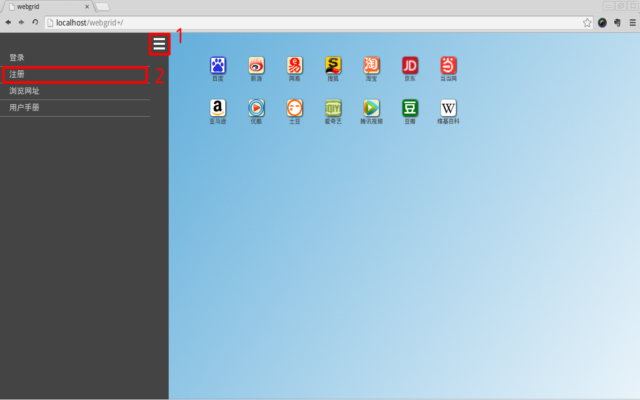
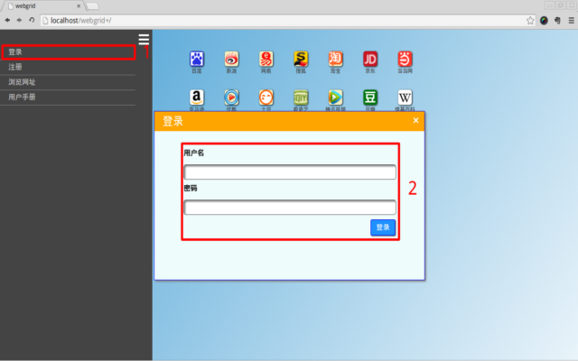
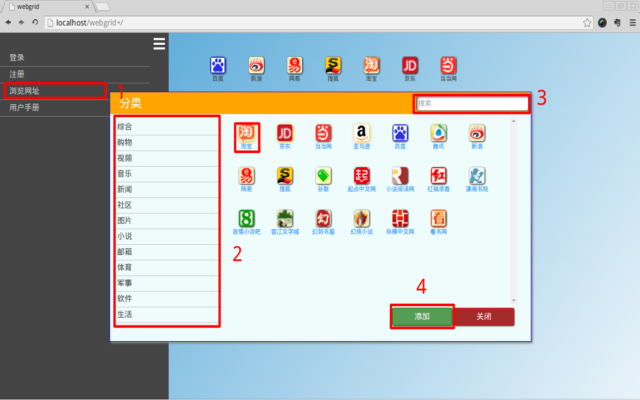
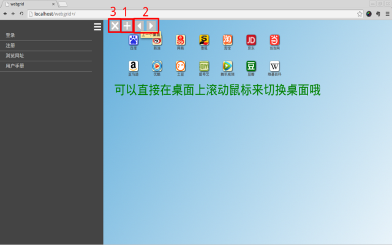
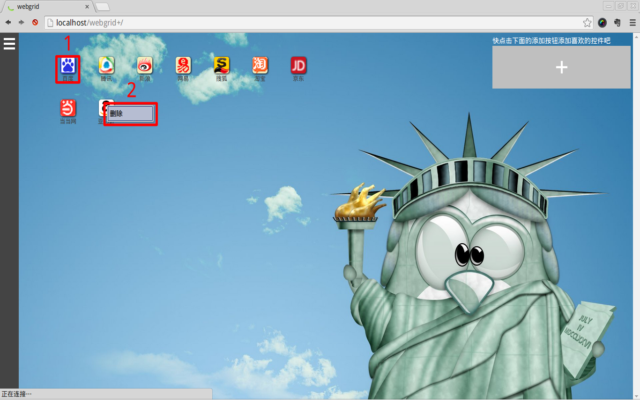
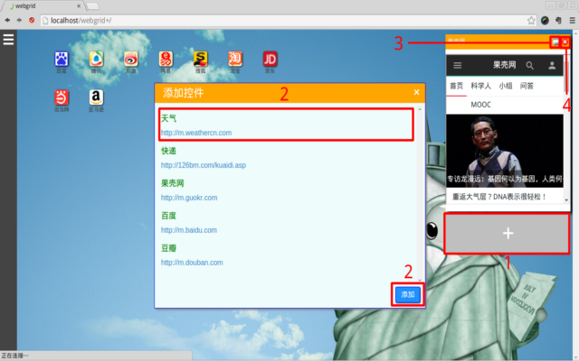

尊敬的用户，感谢您使用WebGrid，WebGrid旨在向您提供便捷的网址导航服务，像管理桌面一样管理您的网页收藏夹。那么，下面我们就要开始行动了。

注册

(1)点击左上角的三条白色横线打开菜单
(2)选中菜单中的注册选项打开注册页面，在注册页面填写用户名和密码，点击注册按钮完成注册
登录

(1)点击菜单中的登录选项打开登录窗口
(2)在登录窗口填写好用户名和密码，点击登录按钮登录
浏览网址

(1)点击菜单中的浏览网址选项打开网址列表窗口
(2)在网址列表窗口的左侧选择您感兴趣的分类
(3)您也可在搜索框中输入您想要查找的网站名称，按回车键进行搜索
(4)在网址列表中点击选中您想要添加到桌面上的网址，再点击一次取消选中，您也可以直接点击网址名称打开该网址
(5)点击添加按钮将您选中的网址添加到桌面上
管理桌面

(1)将鼠标移动到桌面上方，桌面工具条将会显现出来，点击带有“+”号的按钮添加一个新桌面
(2)点击向左或者向右的按钮来切换到前一个或者后一个桌面，您也可以直接在桌面上滚动鼠标来切换桌面
(3)点击带有“x”号的按钮删除当前桌面
管理桌面图标

(1)点击桌面上的图标直接打开对应的网站
(2)将鼠标移动到图标上，点击鼠标右键，选中删除项可以删除该图标
管理控件

(1)点击桌面右侧带有“+”号的按钮打开控件列表窗口
(2)选中想要添加到桌面上的控件点击添加按钮将控件添加到桌面
(3)点击控件右上角的链接按钮在新窗口打开控件对应的网页
(4)点击控件右上角的关闭按钮删除控件
用户中心
(1)点击菜单中的用户名打开用户中心
(2)若需要修改登录密码，可在更改密码区域填写新密码和旧密码
(3)点击修改按钮修改密码
(4)若需要更换背景图片，可在更改背景图片区域选择新的背景图片文件
(5)点击更换按钮更换背景图片
要说的就这些了，最后再次感谢您对WebGrid的支持，您有任何疑问的话都可以和我联系，附上我的邮箱地址
wuxiaotu2012@gmail.com
，祝您体验愉快！